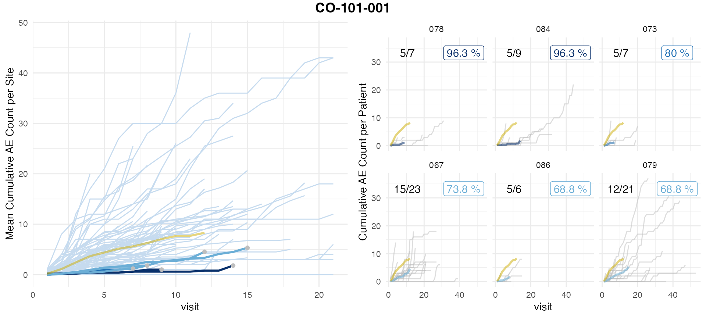

Typically clinical data is stored in several SAS files in a standardized format. We need the files in which the visits and the AEs are recorded. For this demo we have selected an anonymized data set which only contains patients enrolled into the control arm. In those data sets the AE onset dates and the visit dates have been replaced with the number of days that have passed since a specific cut-off date. We can proceed in a similar way
## # A tibble: 4,702 × 4
## STUDYID SUBJID SITEID AESTDY
## <chr> <chr> <chr> <dbl>
## 1 CO-101-001 01001001 001 -14
## 2 CO-101-001 01001001 001 -13
## 3 CO-101-001 01001001 001 50
## 4 CO-101-001 01001001 001 67
## 5 CO-101-001 01001001 001 77
## 6 CO-101-001 01001001 001 84
## 7 CO-101-001 01001001 001 99
## 8 CO-101-001 01001001 001 99
## 9 CO-101-001 01001001 001 127
## 10 CO-101-001 01001001 001 127
## # ℹ 4,692 more rows## # A tibble: 45,176 × 4
## STUDYID SUBJID SITEID ADY
## <chr> <chr> <chr> <dbl>
## 1 CO-101-001 01001001 001 -7
## 2 CO-101-001 01001001 001 1
## 3 CO-101-001 01001001 001 1
## 4 CO-101-001 01001001 001 8
## 5 CO-101-001 01001001 001 8
## 6 CO-101-001 01001001 001 15
## 7 CO-101-001 01001001 001 15
## 8 CO-101-001 01001001 001 29
## 9 CO-101-001 01001001 001 29
## 10 CO-101-001 01001001 001 38
## # ℹ 45,166 more rowsIn order to assign each AE to a visit we union both event tables and sort by date.
df_ae <- df_ae %>%
rename(DY = AESTDY) %>%
mutate(EVENT = "AE")
df_vs <- df_vs %>%
rename(DY = ADY) %>%
mutate(EVENT = "VS") %>%
# we ignore visits that have no date
filter(! is.na(DY)) %>%
# we are not interested in same day visits
distinct()
df_aevs <- bind_rows(df_ae, df_vs) %>%
# NA's get sorted towards the end thus AEs with no date get sorted towards last visit
arrange(STUDYID, SITEID, SUBJID, DY) %>%
group_by(STUDYID, SITEID, SUBJID) %>%
mutate(AE_NO = cumsum(ifelse(EVENT == "AE", 1, 0)),
VS_NO = cumsum(ifelse(EVENT == "VS", 1, 0))) %>%
# we remove patients with 0 visits
filter(max(VS_NO) > 0) %>%
# AE's before fist visit should register to visit 1 not zero
mutate(VS_NO = ifelse(VS_NO == 0, 1, VS_NO))patient example with AE before first visit and AEs with NA in date
| STUDYID | SUBJID | SITEID | DY | EVENT | AE_NO | VS_NO |
|---|---|---|---|---|---|---|
| CO-101-001 | 01007004 | 007 | -14 | AE | 1 | 1 |
| CO-101-001 | 01007004 | 007 | -8 | VS | 1 | 1 |
| CO-101-001 | 01007004 | 007 | -3 | AE | 2 | 1 |
| CO-101-001 | 01007004 | 007 | -1 | AE | 3 | 1 |
| CO-101-001 | 01007004 | 007 | 1 | AE | 4 | 1 |
| CO-101-001 | 01007004 | 007 | 1 | VS | 4 | 2 |
| CO-101-001 | 01007004 | 007 | 8 | VS | 4 | 3 |
| CO-101-001 | 01007004 | 007 | 15 | AE | 5 | 3 |
| CO-101-001 | 01007004 | 007 | 15 | AE | 6 | 3 |
| CO-101-001 | 01007004 | 007 | 18 | AE | 7 | 3 |
| CO-101-001 | 01007004 | 007 | 20 | VS | 7 | 4 |
| CO-101-001 | 01007004 | 007 | 29 | VS | 7 | 5 |
| CO-101-001 | 01007004 | 007 | 36 | AE | 8 | 5 |
| CO-101-001 | 01007004 | 007 | 36 | AE | 9 | 5 |
| CO-101-001 | 01007004 | 007 | 36 | AE | 10 | 5 |
| CO-101-001 | 01007004 | 007 | 36 | VS | 10 | 6 |
| CO-101-001 | 01007004 | 007 | 43 | VS | 10 | 7 |
| CO-101-001 | 01007004 | 007 | 57 | AE | 11 | 7 |
| CO-101-001 | 01007004 | 007 | 57 | AE | 12 | 7 |
| CO-101-001 | 01007004 | 007 | 57 | VS | 12 | 8 |
| CO-101-001 | 01007004 | 007 | 58 | AE | 13 | 8 |
| CO-101-001 | 01007004 | 007 | 64 | VS | 13 | 9 |
| CO-101-001 | 01007004 | 007 | 71 | VS | 13 | 10 |
| CO-101-001 | 01007004 | 007 | 85 | VS | 13 | 11 |
| CO-101-001 | 01007004 | 007 | 92 | VS | 13 | 12 |
| CO-101-001 | 01007004 | 007 | 99 | AE | 14 | 12 |
| CO-101-001 | 01007004 | 007 | 99 | VS | 14 | 13 |
| CO-101-001 | 01007004 | 007 | 112 | VS | 14 | 14 |
| CO-101-001 | 01007004 | 007 | 120 | AE | 15 | 14 |
| CO-101-001 | 01007004 | 007 | 123 | AE | 16 | 14 |
| CO-101-001 | 01007004 | 007 | 123 | AE | 17 | 14 |
| CO-101-001 | 01007004 | 007 | 123 | AE | 18 | 14 |
| CO-101-001 | 01007004 | 007 | 125 | VS | 18 | 15 |
| CO-101-001 | 01007004 | 007 | NA | AE | 19 | 15 |
| CO-101-001 | 01007004 | 007 | NA | AE | 20 | 15 |
| CO-101-001 | 01007004 | 007 | NA | AE | 21 | 15 |
Then we aggregate on visit number.
df_aevs_aggr <- df_aevs %>%
group_by(STUDYID, SITEID, SUBJID, VS_NO) %>%
summarise(MIN_AE_NO = min(AE_NO),
MAX_AE_NO = max(AE_NO),
.groups = "drop") %>%
group_by(STUDYID, SITEID, SUBJID) %>%
mutate(MAX_VS_PAT = max(VS_NO)) %>%
ungroup() %>%
# assign AEs that occur after last visit to last AE
mutate(
CUM_AE = ifelse(
VS_NO == MAX_VS_PAT,
MAX_AE_NO,
MIN_AE_NO)
)Same patient example as before.
| STUDYID | SITEID | SUBJID | VS_NO | MIN_AE_NO | MAX_AE_NO | MAX_VS_PAT | CUM_AE |
|---|---|---|---|---|---|---|---|
| CO-101-001 | 007 | 01007004 | 1 | 1 | 4 | 15 | 1 |
| CO-101-001 | 007 | 01007004 | 2 | 4 | 4 | 15 | 4 |
| CO-101-001 | 007 | 01007004 | 3 | 4 | 7 | 15 | 4 |
| CO-101-001 | 007 | 01007004 | 4 | 7 | 7 | 15 | 7 |
| CO-101-001 | 007 | 01007004 | 5 | 7 | 10 | 15 | 7 |
| CO-101-001 | 007 | 01007004 | 6 | 10 | 10 | 15 | 10 |
| CO-101-001 | 007 | 01007004 | 7 | 10 | 12 | 15 | 10 |
| CO-101-001 | 007 | 01007004 | 8 | 12 | 13 | 15 | 12 |
| CO-101-001 | 007 | 01007004 | 9 | 13 | 13 | 15 | 13 |
| CO-101-001 | 007 | 01007004 | 10 | 13 | 13 | 15 | 13 |
| CO-101-001 | 007 | 01007004 | 11 | 13 | 13 | 15 | 13 |
| CO-101-001 | 007 | 01007004 | 12 | 13 | 14 | 15 | 13 |
| CO-101-001 | 007 | 01007004 | 13 | 14 | 14 | 15 | 14 |
| CO-101-001 | 007 | 01007004 | 14 | 14 | 18 | 15 | 14 |
| CO-101-001 | 007 | 01007004 | 15 | 18 | 21 | 15 | 21 |
As a control we check whether the numbers of visits and AEs of our processed data still matches the number of AEs in our original data.
stopifnot(nrow(df_aevs_aggr) == nrow(df_vs))
n_aes <- df_aevs_aggr %>%
group_by(SUBJID) %>%
summarize(n_aes = max(CUM_AE)) %>%
pull(n_aes) %>%
sum()
n_aes_original <- df_ae %>%
# all AEs for patients with more than 1 visit
filter(SUBJID %in% df_aevs$SUBJID) %>%
nrow()
stopifnot(n_aes == n_aes_original)After renaming some of the columns we can pass the aggregated data
from the SAS files to simaerep
df_visit <- df_aevs_aggr %>%
rename(
study_id = "STUDYID",
site_number = "SITEID",
patnum = "SUBJID",
n_ae = "CUM_AE",
visit = "VS_NO"
) %>%
select(study_id, site_number, patnum, n_ae, visit)
df_visit## # A tibble: 5,432 × 5
## study_id site_number patnum n_ae visit
## <chr> <chr> <chr> <dbl> <dbl>
## 1 CO-101-001 001 01001001 1 1
## 2 CO-101-001 001 01001001 2 2
## 3 CO-101-001 001 01001001 2 3
## 4 CO-101-001 001 01001001 2 4
## 5 CO-101-001 001 01001001 2 5
## 6 CO-101-001 001 01001001 2 6
## 7 CO-101-001 001 01001001 2 7
## 8 CO-101-001 001 01001001 3 8
## 9 CO-101-001 001 01001001 3 9
## 10 CO-101-001 001 01001001 6 10
## # ℹ 5,422 more rows
Left panel shows mean AE reporting per site (lightblue and darkblue lines) against mean AE reporting of the entire study (golden line). Single sites are plotted in descending order by AE under-reporting probability on the right panel in which grey lines denote cumulative AE count of single patients. Grey dots in the left panel plot indicate sites that were picked for single plotting. AE under-reporting probability of dark blue lines crossed threshold of 95%. Numbers in the upper left corner indicate the ratio of patients that have been used for the analysis against the total number of patients. Patients that have not been on the study long enough to reach the evaluation point (visit_med75, see introduction) will be ignored.